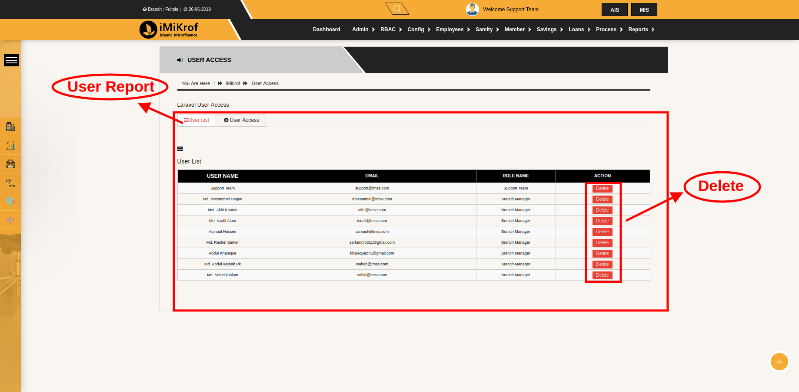
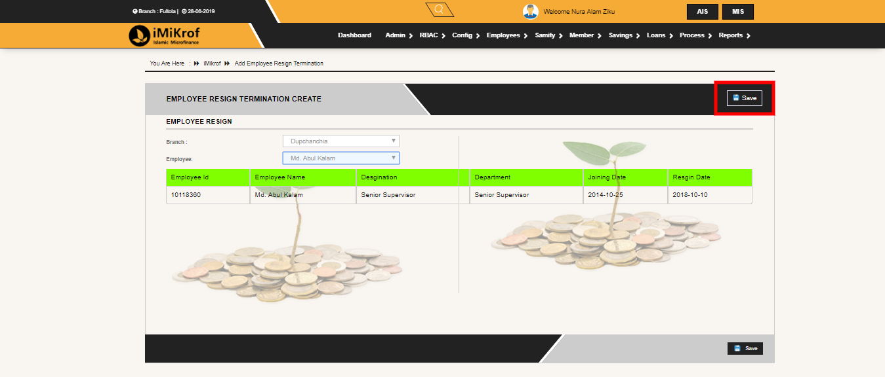
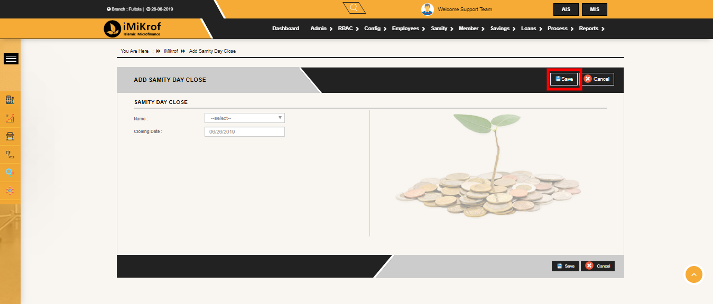
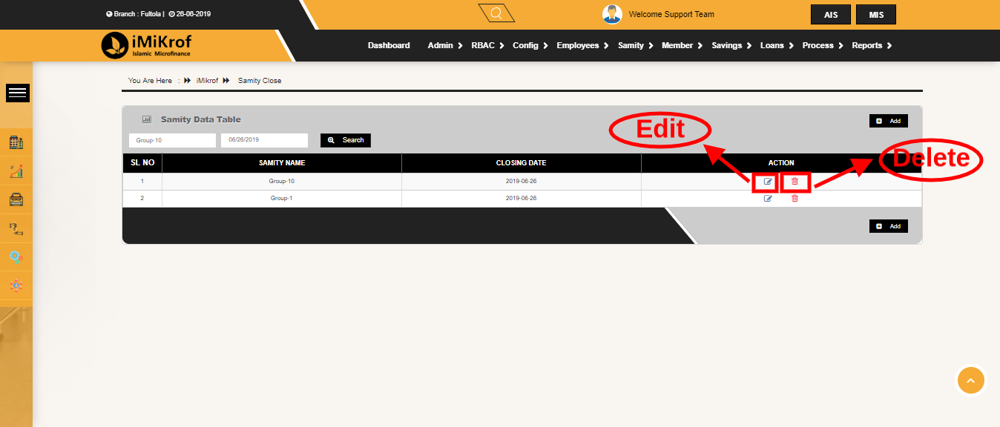
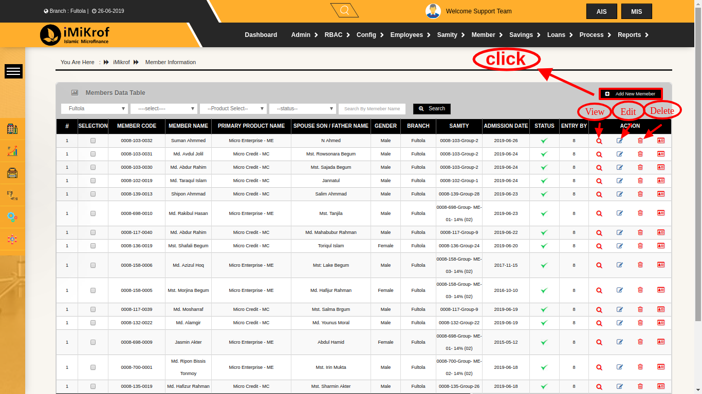
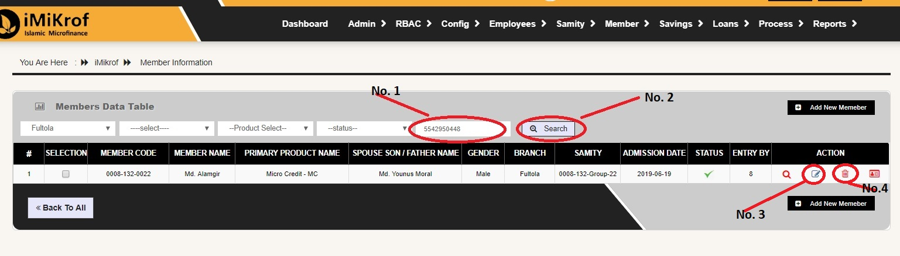
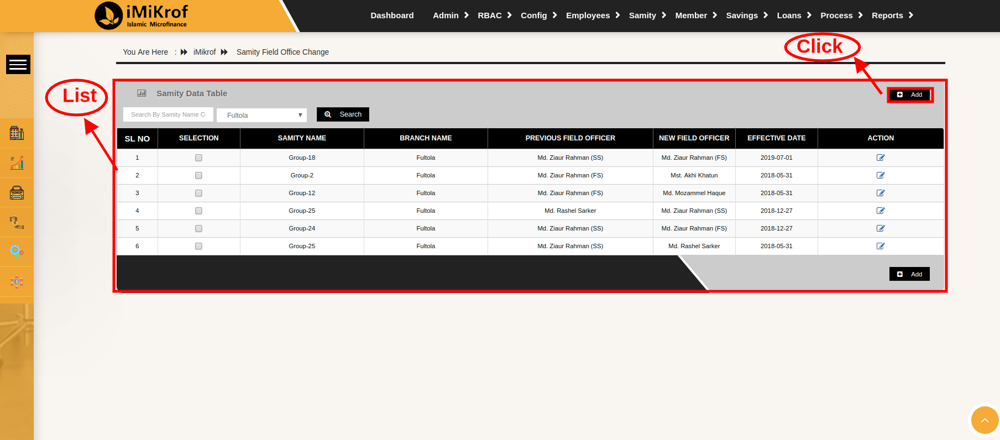
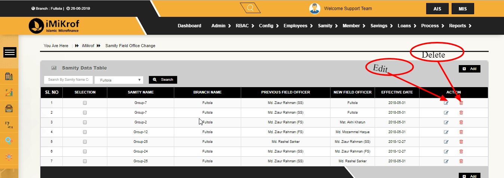

User Manual ( Bangla Version )
সূচিপত্র
ভূমিকা
ভুমিকা: দেশের হ্মুদ্রঋণ কার্যক্রমকে আরও গতিশিল স্বচ্ছ ও যুগপোযোগি করতে টি এম এস আইমাইক্রপ সফটওয়ার নামে একটি অনলাইন সফটওয়ার তৈরি করেছে যা হ্মুদ্রঋণ কার্যক্রমের (এম,আই;এস)এবং(এ আই এস) ইন্ট্রিগ্রেসন করবে এবং শাখার দৈনন্দিন কাজকে সহজ করে দিবে. আই মাইক্রোফ সফটয়ার বড় বৈশিষ্ট হচ্চে ওয়েব এর মাধ্যেমে কাজ করা এতে ডাটা সিকিউরিটি সহ প্রতিমাসের শাখা এরিয়া জোন ও প্রধান কার্যালয় পর্যায়ের সকল রিয়েলটাইম তথ্য রিপোর্ট সঠিক ও সুন্দর ভাবে পাওয়া যায়|
কিভাবে শুরু করবে: আপনাকে টি এম এস এস থেকে একটি লগইন লিংক দেওয়া হবে সেইটা এড্রেস বারে লিখে আইমাইক্রোফ পেইজটিতে ওপেন করতে হবে| টি এম এস এস থেকে যে ইউজার্ নেইম এবং পাসওয়ার্ড টি পাওয়া যাবে সেই খানে ইউযার এবং পাসওয়ার্ড ফিল্ড এর মদ্দে লিখে লগইন করতে হবে |

চিত্রে লগইন পেইজিটি দেখানো হল
কিবাবে সফ্টওয়ার এ লগইন করবেন
IMirof সফটওয়্যার এ লগইন করার জন্য প্রথমে আপনার কম্পিউটারের ইন্টারনেট কানেকশন নিশ্চিত করতে হবে। তারপর ইন্টারনেট ব্রাউজার ওপেন করতে হবে।সফটওয়্যারটির Supported ইন্টারনেট ব্রাউজার হচ্ছে google Chorme,microsoft edge ।

ইন্টারনেট ব্রাউজার ওপেন করার পর ব্রাউজার এর Address এ সফটওয়্যার এর Address লিখতে হবে।

Address লেখার পর কী-বোর্ডের ইন্টার কী প্রেস করতে হবে,প্রেস করার পর উক্ত সফটওয়্যার এ প্রবেশ করার জন্য একটি লগইন ফর্ম আসবে।

লগইন ফর্মে দুইটি টেক্সট বক্স আছে একটি Email Address এবং অপরটি Password । উক্ত টেক্সট বক্সে ই-মেইল ও পাসওয়ার্ড দেওয়ার পর লগইন বাটন এ ক্লিক করতে হবে । ই-মেইল ও পাসওয়ার্ড যদি বৈধ হয় তা হলে সফটওয়্যারটি এক্সেস করার অনুমতি পাবেন। আর যদি বৈধ না হয় তাহলে পুনরায় লগইন ফর্মে ফেরত পাঠাবে।
কিভাবে ইউজার এক্সেস কনফিগার করবেন
ইউজার এক্সেস হচ্ছে সেখান থেকে কোনো ইউজার বা কোনো ইমপ্লয়ী কে তাদের রেজিগ্নেশান অর্থাৎ পদ মর্যাদা অনুযায়ী বিভিন্ন পারমিশন দেয়া হয়। অর্থাৎ, কোন কাজটা করতে পারবে আবার কোন কাজটা করতে পারবেনা সে পারমিশন দেয়া হয়। এক্ষেত্রে কোনো ইউজার অর্থাৎ ইমপ্লয়ী কে কোনো পারমিশন দিতে হলে RBAC তে মাউস পয়েন্টার রেখে ইউজার এক্সেস এ ক্লিক করতে হবে।

ক্লিক করার পর ইউজার লিস্ট আসবে। সেখানে ইউজার এক্সেস এর সকল তথ্য পাওয়া যাবে। কোনো তথ্য যদি ডিলিট করার প্রয়োজন হয় তাহলে মনিটরের পর্দার ডান পাশের (Delete) বাটনে ক্লিক করে ডিলিট করা যাবে।
নতুন করে কোনো ইউজার অ্যাড করতে হলে ইউজার এক্সেস বাটনে ক্লিক করতে হবে।ক্লিক করার পর একটি ফর্ম আসবে।প্রথমে সেখান থেকে যে ইমপ্লয়ী কে পারমিশন দেয়া হবে সে ইমপ্লয়ীর ব্রাঞ্চ নেইম সিলেক্ট করতে হবে। ব্রাঞ্চ নেইম সিলেক্ট করার পর ওই ইমপ্লয়ীর নেইম সিলেক্ট করতে হবে। তারপর কি ধরণের পারমিশন দেয়া হবে তা সিলেক্ট করতে হবে। এবং সব শেষ সেভ বাটনে ক্লিক করলে পারমিশন সম্পন্ন হবে। তারপর তা লিস্ট এ অ্যাড হয়ে যাবে।

কিভাবে এমপ্লয়ীজ কনফিগার করবেন ?
এই মেনু থেকে সাধারনত Employee তথ্য জমা রাখা হয় এবং প্রয়োজনে Emloyee এর তথ্য পরিবর্তন ও মুছে দেওয়া যায়।
Employee টেবিলের ডান পাশে Add Employee বাটন আছে।উক্ত বাটনে ক্লিক করে আমরা নতুন Employee এর তথ্য জমা করতে পারি।Add Employe বাটনে ক্লিক করলে একটি ফর্ম দেখতে পাবেন।ফর্মটি পূরনের মাধ্যমে নতুন কর্মচারীর তথ্য জমা রাখা হয়।
Employee টেবিলে Action নামে একটি কলাম আছে ,যেখানে দুইটি বাটন আছে যথক্রমে Edit,Delete.কোন একজন কর্মচারীর তথ্য পরিবর্তন করার প্রোয়জন হলে Edit বাটন ক্লিক করতে হবে।

Edit বাটনে ক্লিক করার পর একটি ফর্ম আসবে,উক্ত ফর্মে কর্মচারীর আগের তথ্য গুলা আসবে, সেখান থেকে প্রোয়জনীয় তথ্য যুক্ত করে Edit ফর্মের নিচে Update নামে একটি বাটন আছে ওই বাটনে ক্লিক করলে পরিবর্তিত তথ্য সেভ হবে। খন আমরা যদি কোন কর্মচারীর তথ্য মুছে ফেলতে চাই তবে Delete বাটনটি ক্লিক করে তথ্য মুছে দিতে পারি । Employee টে্বিল থেকে কোন emloyee এর তথ্য খুজে বের করতে হলে employee টেবিল এর সার্চ বক্সে employee এর নাম,পদবী এবং ব্রাঞ্জ এর নাম সিলেক্ট করে সার্চ বাটনে ক্লিক করতে হবে।সার্চ বাটনে ক্লিক করলে উক্ত employee এর তথ্য পাওয়া যাবে।
কিভাবে ইমপ্লোই ডিপার্টমেন্ট কনফিগার করবেন ?
Employees Department- এর মধ্যে একটা কোম্পানির সবগুলো ডিপার্টমেন্টের নাম থাকবে এবং ইউজার এডমিন তাদের প্রয়োজন মতে ডিপার্টমেন্ট সংযোগ করতে পারবে এবং কি প্রয়োজন হলে ডিপার্টমেন্ট এর নাম সংশোধন ও ডিলিট করতে পারবে।Employees Department এ যে ডিপার্টমেন্ট গুলো এড করা হবে তা সবগুলো ডিপার্টমেন্ট একটা টেবিলে প্রদর্শন করবে

এ ডিপার্টমেন্ট এড করার পদ্ধতিঃ প্রথমে Employee মেনু থেকে Employees Department এ ক্লিক করে Employees Department প্রবেশ করতে হবে। তারপর Employees Department Data Table এর ডান পাশের +Add new Department বাটনে ক্লিক করলে একটা মোডাল প্রদর্শন হবে, যেখানে “Enter Employee Department name and click Save” একটি ফরম আসবে সেখানে Department এর নিচে ইনপুট ফিল্ডে Department এর নাম লেখতে হবে তার পর নিচের Save বাটনে ক্লিক করে Add new Department সম্পূর্ণ করতে হবে ।

Employees Department এর ডিপার্টমেন্ট সংশোধন বা ডিলিট করার জন্য Employees Department Data Table এর ডান পাশের Action নামের কলামের এডিট বাটনে ক্লিক করে ডিপার্টমেন্টের নাম সংশোধন করা যাবে এবং ডিলিট বাটনে ক্লিক করলে ডিপার্টমেন্ট টি ডিলিট হয়ে যাবে।

কিভাবে ইমপ্লোই প্রমোশান কনফিগার করবেন
প্রথমে এমপ্লয়ী নামক মডিউলে ক্লিক করলে অনেক গুলো অপশন থেকে এমপ্লয়ী প্রমোশান নামক অপশনে কিøক করতে হবে। এরপর এমপ্লয়ী প্রমোশান নামক পেইজটি আসবে। এরপর উপরের ডান পাশে এড নিউ এমপ্লয়ী প্রমোশান নামক বাটনে ক্লিক করতে হবে।

তারপর এড এমপ্লয়ী প্রমোশান নামক একটি ফরম আসবে। এখানে প্রথম ফিল্ড হচ্ছে ব্রান্স বা শাখা। এখানে প্রথমে যে এমপ্লয়ী বা চাকুরিজিবী যে ব্রান্স বা শাখায় আছে তার তথ্য লিখতে বা এন্ট্রি দিতে হবে । তারপর যে ফিল্ড আছে তাতে যে এমপ্লয়ীকে প্রমোশান দেওয়া হবে তার নাম লিখতে হবে। তারপরের ফিল্ড হচ্ছে পূরানা পদবী বা ওল্ড ডেজিগনেশান। এই ফিল্ডে এমপ্লয়ীর পূরান বা যে পদবী থেকে প্রমোশান পাবে তা লিখতে হবে। তারপরের ফিল্ডে নতুন যে পদবীতে প্রমোশান দেওয়া হবে তা লিখতে হবে। এরপর সব তথ্য সঠিক ভাবে লিখা বা এন্ট্রি করা হলে সেইভ নামক বাটনে কিøক করতে হবে। তাহলে তথ্য সেইভ বা সংরক্ষিত হবে। যদি ফরমের তথ্য লিখার পর সেইভ করার প্রয়োজন না হলে কেনসেল নামক বাটনে ক্লিক কওে ফরম টির তথ্য বাদ দেওয়া যাবে। যদি ফরমের সকল ফিল্ড সঠিক ভাবে পূরন করা না হয় তাহলে সেইভ বাটনে ক্লিক করলে এরর বা ফেইল্ড নটিফিকেশান দেখাবে এবং তথ্য সেইভ হবে না। আর যদি সকল ফিল্ড সঠিক ভাবে পূরন কওে সেইভ করা হয় তাহলে সাকসেসফুল নামক নটিফিকেশান দেখাবে এবং তথ্য সেইভ বা সংরক্ষিত হবে।

সংরক্ষিত তথ্য সমূহ ডাটা টেবিলের মধ্যে দেখা যাবে। যদি কোন তথ্য পরিবর্তন করার প্রয়োজন হয় তাহলে এডিট নামক বাটনে ক্লিক করে আবার আগের ফরমের মতো ফরমে গিয়ে তথ্য পরিবর্তন করে সেইভ করা যায়। আবার কোন এমপ্লয়ীর তথ্য বাদ দিতে হলে ডিলিট নামক বাটনে ক্লিক করলে তথ্য কি সত্যি ডিলিট করতে চাই কিনা? এই রকম একটা নটিফিকেশন আসবে ঐখানে হ্যা নামক বাটনে ক্লিক করলে তথ্য ডিলিটি হয়ে যাবে।এভাবেই এমপ্লয়ী রেসপনসিবিলিটি হিসটরিতে এমপ্লয়ীর তথ্য এড, ডিলিট এবং এডিট করা যাবে।
কিভাবে ইমপ্লোই রেসপনসিবিলিটি হিসটরি কনফিগার করবেন
প্রথমে এমপ্লয়ী নামক মডিউলে ক্লিক করলে অনেক গুলো অপশন থেকে এমপ্লয়ী রেসপনসিবিলিটি হিসটরি নামক অপশনে কিøক করতে হবে।

এরপর এমপ্লয়ী রেসপনসিবিলিটি হিসটরি নামক পেইজ টি আসবে। এরপর উপরের ডান পাশে এড এমপ্লয়ী রেসপনসিবিলিটি হিসটরি নামক বাটনে ক্লিক করতে হবে। তারপর একটি এড ফরম আসবে। এখানে প্রথম ফিল্ড হচ্ছে ব্রান্স বা শাখা। এখানে প্রথমে যে এমপ্লয়ীর দায়িত্ব তথা রেসপনসিবিলিটি থাকবে তার ব্রান্স বা শাখার নাম দিতে হবে। তারপরের ফিল্ড হচ্ছে এমপ্লয়ীর নাম। এখানে এমপ্লয়ীর নাম দিতে হবে। তারপরের ফিল্ড হচ্ছে কোন তারিখ হতে তার রেসপনসিবিলিটি বা দায়িত্ব শুরু হবে তার তারিখ উল্লেখ বা এন্ট্রি করে দিতে হবে। তার পরের ফিল্ড হচ্ছে কোন তারিখে তার (এমপ্লয়ীর) দায়িত্ব বা রেসপনসিবিলিটি শেষ হবে তার তারিখ এড বা লিখে দিতে হবে।এভাবে সবগুলো ফিল্ড পূরন করা হয়ে গেলে সেইভ নামক বাটনে কিøক করতে হবে। যদি সব তথ্য ঠিক ঠিক ভাবে পূরন করা হয় তাহলে সাকসেসফুল নটিফিকেশন দেখাবে। নাহলে ফেইলড নামক নটিফিকেশন দেখাবে। তাহলেই ঐ এমপ্লয়ী বা চাকুরিজিবীর রেসপনসিবিলিটি হিসটরি এড হয়ে যাবে।।

এরপরে সেইভ করা তথ্য গুলো এমপ্লয়ী রেসপনসিবিলিটি হিসটরি নামক টেবিলে দেখাবে। যদি ইনফরমেশন বা তথ্যে কোন ভুল থাকে তাহলে এডিট বাটনে ক্লিক করে আবার আগের মতো ফরমে তথ্য ঠিক করে সেইভ করা যাবে। আবার কোন এমপ্লয়ীর তথ্য বাদ দিতে হলে ডিলিট নামক বাটনে ক্লিক করলে তথ্য কি সত্যি ডিলিট করতে চাই কিনা? এই রকম একটা নটিফিকেশন আসবে ঐখানে হ্যা নামক বাটনে ক্লিক করলে তথ্য ডিলিটি হয়ে যাবে।এভাবেই এমপ্লয়ী রেসপনসিবিলিটি হিসটরিতে এমপ্লয়ীর তথ্য এড, ডিলিট এবং এডিট করা যাবে।
কিভাবে এমপ্লয়ী রিজাইন/টারমিনেশন কনফিগার করবেন
এমপ্লয়ী মডিউলে মাউস পয়েন্টার রাখলে এমপ্লয়ী রিজাইন/টারমিনেশন লেখাটি দেখতে পাবো।
ক্লিক ক্লিক করার সাথে সাথে যে সব এমপ্লয়ীরা চাকরীচূত হয়েছে তাদের ১টা তালিকা দেখতে পাবো ।

যদি কোনো নির্দিষ্ট এমপ্লয়ীর তথ্য জানতে চাই তাহলে ওই এমপ্লয়ীর কোড এবং ব্রাঞ্চ নাম দিয়ে সার্চ করতে হবে ।
তথ্য অ্যাড করার সময় যদি কোনো ভুল হয়ে থাকে তাহলে তা ডিলিট করে পুনরায় অ্যাড করবো অথবা এডিট করে দিবো । টেবিল এর ডান সাইডে অ্যাকশন লেখার নিচে যে লাল বাটন বা ডিলিট এর আইকন আছে ওই বাটন এ ক্লিক করলে ডিলিট অপারেশন কমপ্লিট হবে ।

ডিলিট বাটন এর পাশেই এডিট বাটন ওই বাটন এ ক্লিক করলে ১টা ফর্ম আসবে এরপর সঠিক তথ্য দিয়ে ফর্ম পূরণ করে সেভ করতে হবে ।

এরপর আসি যদি কোনো এমপ্লয়ী রেজাইন নে তাকে অ্যাড দিতে হবে অ্যাড নিউ বাটন করুন |

ক্লিক করলে ১টা ফর্ম দেখতে পাবো এরপর ব্রাঞ্চ নাম এবং এমপ্লয়ী সিলেক্ট করলে ১টা টেবিল জেনারেট হবে টেবিল থেকে তথ্য গুলো সঠিক আছে কিনা তা চেক করে সেভ বাটন এ ক্লিক করবো । এভাবে এমপ্লয়ী রেজাইন/টারমিনেশন এর কাজ শেষ ।
কিভাবে সমিতি ক্লোজিং কনফিগার করতে হবে
সমিতি মডিউলে মাউস পয়েন্টার রাখলে একেবারে শেষে সমিতি ক্লোজিং দেখতে পাবো।

সমিতি ক্লোজিং এ ক্লিক করার সাথে সাথে সমিতি ক্লোজিং এর পূর্ববর্তী ইতিহাস দেখতে পাবো । অর্থাৎ, পূর্বে যে সব সমিতি গুলো ক্লোজিং হয়েছে।

কোনো নির্দিষ্ট তথ্য জানার জন্য সমিতি নাম অথবা সমিতি কোড এবং তারিখ দিয়ে সার্চ করলে কাঙ্খিত তথ্য দেখতে পাবো।

টেবিল থেকে কোনো তথ্য ভুল হলে তা ডিলিট করা বা এডিট করা যাবে কি ভাবে করতে হবে তা অ্যাড করার পর বলছি। সমিতি টেবিলের ঠিক ডান পাশেই অ্যাড বাটন।

অ্যাড বাটন এ ক্লিক করলে ১টা ফর্ম দেখতে পাবো ফর্মে সঠিক তথ্য দিয়ে সেভ বাটন এ ক্লিক করবো।

সেভ হয়ে তা সরাসরি সমিতি ক্লোজিং টেবিল এ চলে যাবে। টেবিল থেকে চেক করে নিব অ্যাড হওয়া তথ্য সঠিক আছে কিনা । যদি তথ্য ভুল হয়ে থাকে তাহলে ডিলিট করে পুনরায় অ্যাড করবো।
কারণ এডিট টেবিল থেকে তথ্য এডিট করা যাবে না শুধু ডিলেটেই করা যাবে।এভাবেই শেষ করতে হবে সমিতি ক্লোজিং এর কাজ
কিভাবে মেম্বার ইনফরমেশন কনফিগার করতে হবে
মেম্বার অপসন এ মাউস পয়েন্টার রেখে মেম্বার ইনফরমেশন এ ক্লিক করলে সকল মেম্বারের তথ্য পাওয়া যায়

এবং ডান পাশের ভিউ বাটনে ক্লিক করে প্রয়োজনে পুরো তথ্য দেখা যায়।ডিলিট বাটনে ক্লিক করে অপ্রয়োজনীয় তথ্য ডিলিট করা যায়। ইডিট বাটনে ক্লিক করে ভুল তথ্য আপডেট বা সংশোধন করা যায়। নতুন কোনো মেম্বার অ্যাড করতে হলে অ্যাড নিউ মেম্বার বাটনে ক্লিক করতে হবে।
 ক্লিক করার পর একটি ফর্ম আসবে। সেখানে মেম্বারের সকল প্রয়োজনীয় তথ্য পূরণ করে সেভ বাটনে ক্লিক করলে নতুন মেম্বার অ্যাড হয়ে যাবে।
কিভাবে মেম্বার ইনফরমেশন কনফিগার করতে হবে
কোন সদস্য ভর্তি করার সময় যদি জাতীয় পরিচয়পত্র নম্বর বাধ্যতামূলক করা হয় তাহলে এই অপশন এর মাধ্যমে খুব সহজে জাতীয় পরিচয়পত্র নম্বর এর মাধ্যমে যে কোন সদস্য কে খুজে বের করা সম্ভব। এমনকি সদস্য যদি একই প্রতিষ্ঠান এর এক শাখা থেকে একবার লোন নেওয়ার পর যদি অন্য কোন শাখা থেকে আবার লোন গ্রহণ করার চেষ্টা করে। সেক্ষেত্রে জাতীয় পরিচয়পত্র নম্বর দেওয়ার সাথে সাথেই উক্ত মেম্বার এর সকল তথ্য সফটওয়্যারে প্রদর্শন করবে।
মেম্বারের জাতীয় পরিচয়পত্র নম্বর চিত্রের No.1 ইনপুট বক্সে বসিয়ে চিত্রের No.2 সার্চ বাটনে ক্লিক করলে নিচের টেবিলে উক্ত মেম্বার এর সকল তথ্য প্রদর্শন হবে।
উক্ত মেম্বার এর সকল তথ্য চিত্রের No.3 এডিট বাটনে ক্লিক করে হালনাগাদ করা হয় এবং উক্ত মেম্বার এর সকল তথ্য চিত্রের No.4 ডিলিট বাটনে ক্লিক করে মুছে ফেলা হয়
কিভাবে সমিতি কনফিগার করবেন?
এই মেনু থেকে সাধারণত সমিতি তথ্য জমা রাখা হয় এবং প্রয়োজন অনুসারে একটা সমিতির সব তথ্য পরিবর্তন ও মুছে দেওয়া যায় নীচের ছবিটাতে কিভাবে সমিতি টেবিলে এ যেতে হয় তা দেওয়া হল |
তারপর আমরা সমিতি টেবিলের সব তথ্য দেখতে পাবো যা নিছের ছবিতে আছে

সমিতি টেবিলের ডান পাশে অ্যাড নিউ সমিতি একটা বাটন আছে । উক্ত বাটনে ক্লিক করে আমরা নতুন সমিতি এর তথ্য জমা করতে পারি। অ্যাড সমিতি বাটনে ক্লিক করলে একটি ফরম দেখতে পাবো পূরণের মাধ্যমে নতুন সমিতির তথ্য ও সমিতি যোগ করা হয়।

এডিট বাটনে ক্লিক করার পর একটি ফর্ম আসবে, সেখান থেকে আমরা প্রয়োজনীয় তথ্য যুক্ত করে এডিট ফর্ম এর নিচে আপডেট নামে একটি বাটন আছে ওই বাটনে ক্লিক করলে পরিবর্তিত সেভ হবে।
আমরা যদি কোন সমিতির তথ্য মুছে ফেলতে চাই তাহলে টেবিলে একশন নামে একটি কলাম আছে, সমিতি টেবিল থেকে ডিলিট বাটন টি ক্লিক করতে হবে।
সমিতি টেবিল থেকে যদি কোন সমিতির তথ্য খুঁজে বের করতে হয় তাহলে টেবিল এর সার্চ বক্সে সমিতির নাম এবং কোন ব্রাঞ্চ সেটা সিলেক্ট করে সার্চ বাটনে ক্লিক করি
কিভাবে সমিতি ডে চেইন্জ কনফিগার করতে হবে
সমিতি ডে চেইন্জ হচ্ছে, যে দিন সমিতির কিস্তি বা ইন্সটলমেন্ট দেওয়া হবে তার সময় বা বার। অর্থাৎ এই বার পরিবর্তন করার জন্যই এটি ব্যাবহার করা হয়।প্রথমে সমিতি নামক মডিউল এ ক্লিক করলে কতগুলো সাব-মডিউল বা অপশান আসে নিচের মতো ।

এখান থেকে সমিতি ডে চেইন্জ নামক মডিউলে ক্লিক করলে নিচের মতো একটা ডাটা টেবিল খুলবে বা আসবে।

এখানে যে যে সমিতির ডে গুলো পরিবর্তন করা হয়েছে তার তালিকা দেখা যাবে।এখন কোন সমিতির ডে বা কিস্তির দিন পরিবর্তন করতে হলে এ পেইজের উপরের ডান পাশেরে এড নামক বাটনে ক্লিক করতে হবে। যা নিচে দেখানো হলো।

তাহলে নিচের মতো একটি ফরম আসবে।

এখানে প্রথম ফিল্ড হচ্ছে ব্রান্স নেইম অর্থাৎ যে ব্রান্সের সমিতির বার পরিবর্তন করা হবে তার নাম লিখতে হবে। এরপরের ফিল্ড হচ্ছে সমিতির নাম, এখানে যে সমিতির বার পরিবর্তন করা হবে তার নাম লিখতে হবে। তার পরের ফিল্ড হচ্ছে সমিতির বর্তমান যে বার আছে তা দেখা যাবে, এটি পরিবর্তন করা যাবে না। এরপরের ফিল্ডে নতুন যে বার বা দিন ঠিক করতে চাই তা লিখতে হবে। এভাবে সব কিছু সঠিক ভাবে পরিবর্তন করা হয়ে গেলে নিচের মতো করে সেইভ বাটনে ক্লিক করলে তথ্য গুলো সংরক্ষিত হবে। যদি ফিল্ড গুলো সঠিক ভাবে পূরন করা না হয় তাহলে এরর বা ফেইল্ড নটিফিকেশান দেখাবে।এখন সংরক্ষিত তথ্যটি আগের মতো ডাটা টেবিলে দেখাবে।যদি কোন তথ্য পরিবর্তন করার প্রয়োজন হয় তাহলে নিচের মতো করে এডিট বাটনে ক্লিক করলে আবার আগের ফরমে তথ্য সহ চলে আসবে ।

এখানে পরিবর্তন করে আবার সেইভ করতে হবে।আবার কোন তথ্য যদি বাদ দিতে হয় তাহলে নিচের মতো ডিলিট বাটনে ক্লিক করতে হবে। তাহলে ডাটা ডিলিট হয়ে যাবে।

এভাবেই সমিতি ডে চেইন্জ এ তথ্য এড, এডিট এবং ডিলিট করা হয়।
কিভাবে সমিতি ফিল্ড অফিসার কনফিগার করতে হবে
Samity মডিউলের ভিতরে Samity Filed Officers Change নামে একটি সাব মডিউল আছে। Samity Filed Officers Change সাব মডিউল হচ্ছে কোন সমিতির ফিল্ড পর্যায়ের কর্মীকে পরিবর্তন করা বা কর্মি যদি নিজ থেকে পদ ত্যাগ করে তবে তার শূন্য স্থান পূরন করার জন্য নতুন কর্মী নিয়োগ করার কাজ এই মডিউলে করা হয়।

Samity Filed Officers Change এ ক্লিক করার পর একটি টেবিল প্রদর্শিত হয় ,উক্ত টেবিলে পরিবর্তিত অফির্সাসদের যাবতীয় তথ্য সংরক্ষন করা হয়।
টেবিলের ডান পাশে এবং নিচের অংশে একটি add বাটন আছে , add বাটনে ক্লিক করার পর একটি ফর্ম আসবে ।

ফর্মে আগে ব্রাঞ্জ সিলেক্ট করতে হবে অর্থাৎ অফিসার্স কোন ব্রাঞ্জের অধিনে পরিবর্তন করতে হবে তা ঠিক করতে হবে। তারপর কোন সমিতির অধিনে অফির্সাস পরিবর্তন করতে হবে তা সিলেক্ট করতে হবে।সমিতি সিলেক্ট করে Old Oficers ফিল্ডে আগের অফিসার্সের নাম আসবে অর্থাৎ ওই সমিতির পূর্বের ফিল্ড অফিসার্স এর নাম আসবে।তারপর new filed officers ফিল্ডে নতুন যে কর্মি নিয়োগ দিবে তা সিলেক্ট করতে হবে ।

এরপর Save বাটনে ক্লিকরে ফর্মটির তথ্য ডাটাবেস টেবিলে সংরক্ষিত হবে, এবং ডাটা টেবিলে প্রদর্শিত হবে।টেবিলের উপরে বাম পাশে একটি সার্চ বক্স আছে যেখানে সমিতির নাম এবং ব্রাঞ্জ যুক্ত করে সার্চ বাটনে ক্লিক করে উক্ত সমিতির তথ্য খুজে বের করা যায়।

টেবিলের Action নামে একটি কলাম আছে যেখানে Edit & Delete নামে দুইটি বাটনে আছে ।
Edit বটনে ক্লিক করার পর একটি ফর্ম আসবে ,ফর্মে কর্মকর্তা/কর্মচারীর আগের তথ্য আসবে এবং সেখান থেকে কর্মকর্তা/কর্মচারীর তথ্য প্রোয়জন অনুযায়ী পরিবর্তন করে Update বাটনে ক্লিক করে পরিবর্তিত তথ্য টেবেলি যুক্ত করা হয়।